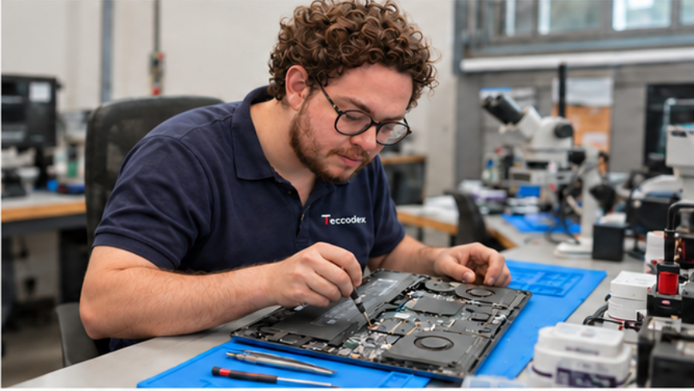
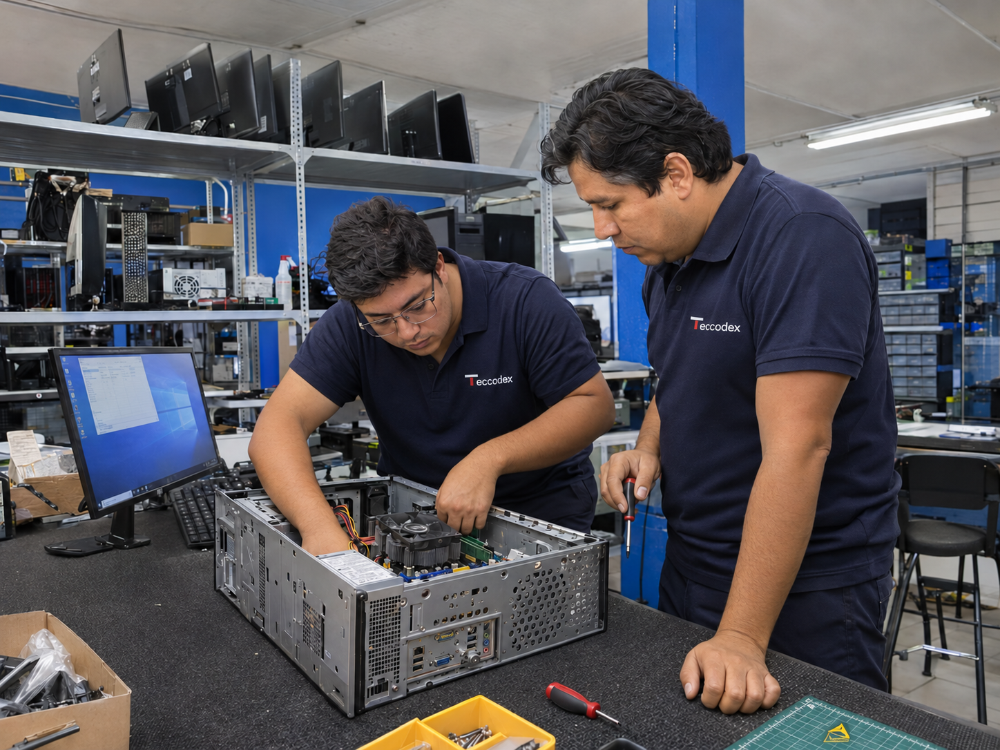
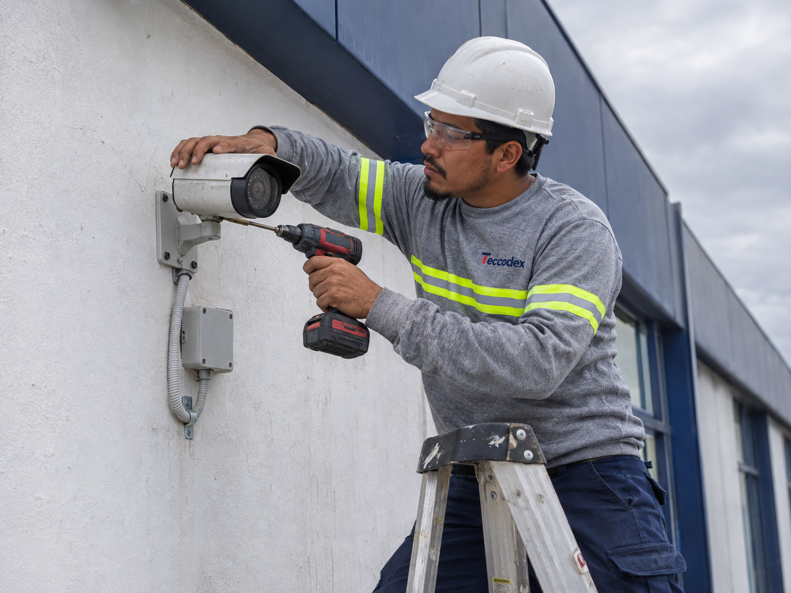
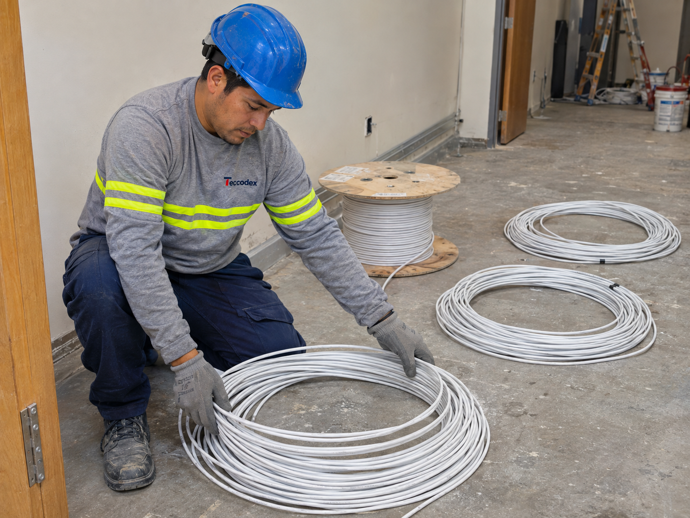

Atención presencial y remota
Soporte según las necesidades de tu operación.

Tecnología que conecta.
SOLUCIONES EMPRESARIALES Y RESIDENCIALES
Infraestructura, conectividad y seguridad.
Soluciones que acompañan tu día a día.
01 — QUIÉNES SOMOS
En Teccodex integramos soporte técnico, conectividad, seguridad y automatización para atender las necesidades de empresas y hogares.
02 — NUESTRAS SOLUCIONES
Desde el soporte de tu infraestructura hasta la seguridad de tus espacios.

03 — POR QUÉ TECCODEX
Atención cercana y un alcance claro desde el inicio.
Soporte según las necesidades de tu operación.
Evaluamos cada requerimiento antes de intervenir.
Mantenimientos programados para reducir interrupciones.
Equipos, impresoras, servidores, redes y seguridad.
Recomendaciones y seguimiento de los trabajos realizados.



04 — ASÍ TRABAJAMOS
Atención técnica ordenada, desde el diagnóstico hasta la verificación.
Evaluamos los equipos, sistemas o infraestructura para identificar la necesidad.
Definimos el trabajo, los recursos necesarios y el alcance del servicio.
Realizamos el mantenimiento, reparación, instalación o configuración.
Comprobamos el funcionamiento y damos seguimiento al trabajo realizado.
05 — MODALIDADES DE ATENCIÓN
Diagnóstico, reparación, instalación o configuración para atender una necesidad específica.
Visitas preventivas planificadas de acuerdo con los equipos y la operación de la empresa.
Atención recurrente, presencial y remota, para acompañar las necesidades tecnológicas del negocio.
Cada servicio se adapta al tamaño, infraestructura y requerimientos de la empresa.
06 — NUESTROS CLIENTES
Empresas que confían en nuestro soporte tecnológico.
EL SIGUIENTE PASO
Cuéntanos qué necesitas conectar, implementar o resolver.
Contáctanos por WhatsApp ↗ Síguenos en LinkedIn